Bootstrap
CONTENT:-
Introduction
Bootstrap is a CSS framework created in 2010 by two Twitter developers Mark Otto and Jacob Thornton.

Now the power of Bootstrap and the reason why it became so popular is it contained pre-made CSS files,
which you can simply include into your project in order to use their pre-built components and styling.
On top of that, one of the biggest reasons why bootstrap took off is because of their 12 column layout system built on top of Flexbox. That makes it really easy to create responsive websites and websites that simply just work and look great on mobile as well as desktop, the so-called mobile first approach.
So how exactly does it work? Well, let's say you had a button which just said home. You can see that the standard button rendered from HTML doesn't look fantastic.

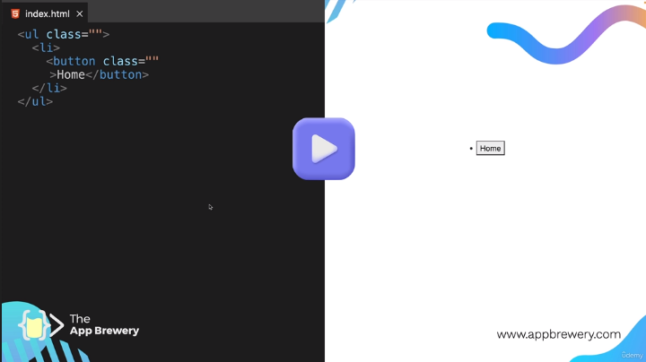
But if we included just five classes which come from the bootstrap CSS, so we include the pre-built CSS into our project and we add the styling and the components by adding these classes to our HTML. Then all of a sudden what you'll end up with is something that looks beautiful and pre styled like this.

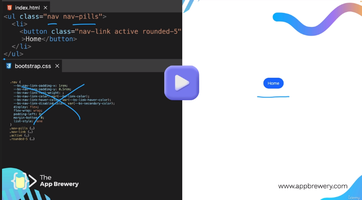
And because we don't have to worry about writing all of the CSS code, all we need to know is which classes we need to add to our HTML. Then it makes everything so much easier and so much quicker when we want to build components into our website.
what are CSS Framework’s?
What exactly are these? Well, they're pre-made CSS files which you can include into your projects. If we had a look at the bootstrap GitHub and because bootstrap is completely open source, then all of the code is visible and you can see it's got styling defined for all of the different components.

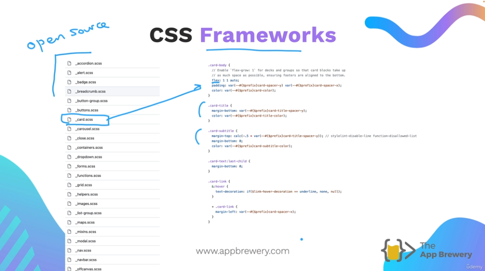
For example, this is inside the card component and it's got classes that define what a card body should look like, what kind of layout it should have, what kind of color it should have, as well as what the card title should look like, subtitle. And it's got all of this predefined CSS, which we can simply insert straight into our HTML.
Framework file:-
Usage percentages of different frameworks
If we look at the usage percentages across the Internet, you can see that the biggest CSS external framework is still bootstrap with close to 80% of the market share. But just because we learn about bootstrap, it doesn't mean that everything we learned about CSS is null and void. In fact, if you look at the top here, when we look at the absolute usage percentages of all of the different frameworks across the Internet, you can see the largest percentage are still websites that don't use any external CSS frameworks. What does it mean when there are no CSS frameworks being used? Well, it means you're probably using native CSS like Flexbox and Grid and Float and all of the great things that we learnt before. So bootstrap doesn't replace any of that knowledge and in fact we should be in a situation where we don't actually need to depend on any sort of external framework, but they are really useful when we want to develop websites quickly and easily and we don't want to spend a ton of time designing our websites because it comes with all of the pre-made styling and all of the styling rules that we can easily conform to by using their components.

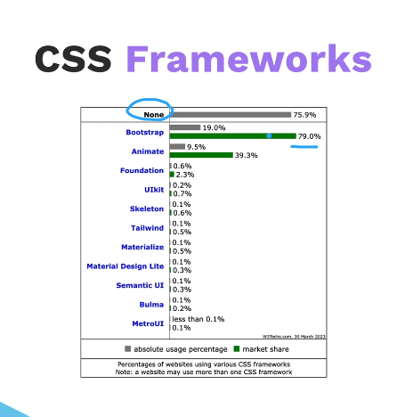
The Advantages of Bootstrap are:
- Fewer Cross browser bugs
- A consistent framework that supports major of all browsers and CSS compatibility fixes
- Lightweight and customizable
- Responsive structures and styles
- Several JavaScript plugins using the jQuery
- Good documentation and community support
- Loads of free and professional templates, WordPress themes and plugins
- Great grid system
The Disadvantages of Bootstrap are:
- There will be requirement of lots of style overrides or rewriting files that can thus lead to a lot of time spent on designing and coding the website if the design tends to deviate from the customary design used in Bootstrap.
- You would have to go the extra mile while creating a design otherwise all the websites will look the same if you don’t do heavy customization.
- Styles are verbose (using or containing more words than are needed) and can lead to lots of output in HTML which is not needed.
- JavaScript is tied to jQuery and is one of the commonest library which thus leaves most of the plugins unused.
- (failing to act in accordance with a wish or command.)Non-compliant HTML.
When to/When Not to use Bootstrap framework?

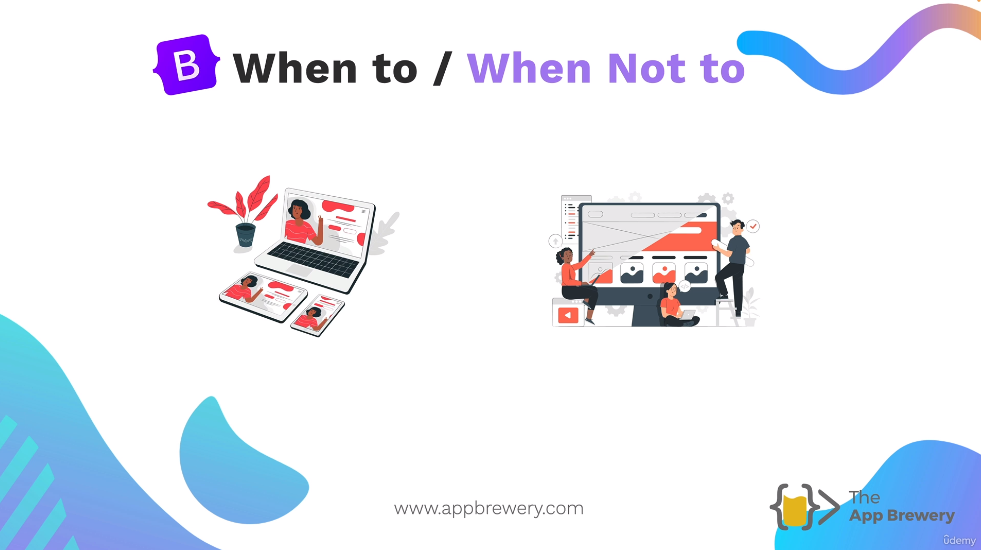
So when should you use the CSS frameworks like Bootstrap and when should you not? Well, when you are building a mobile first responsive website that you want to put online very quickly and access beautiful components designed by professional designers, keeping everything on your website looking slick and uniform, then you probably want to consider using bootstrap. But if you're building a very simple website where you just need HTML and CSS and you can quickly throw it up, or if you're building a really complex custom design website and you want complete control over the design, then it's probably not a good idea to use an external CSS framework like Bootstrap.
How to use Bootstrap? & CDN
how do you actually use it?

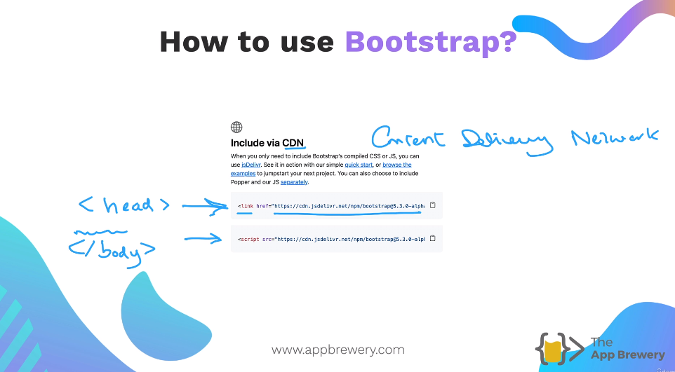

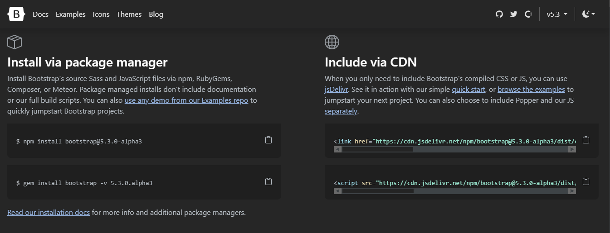
Well, one of the easiest ways is to include it via a link. We've seen how we can use the link tag in order to add our stylesheets. And in a similar way we can use these link tags that simply gets hold of the stylesheet from an external resource.

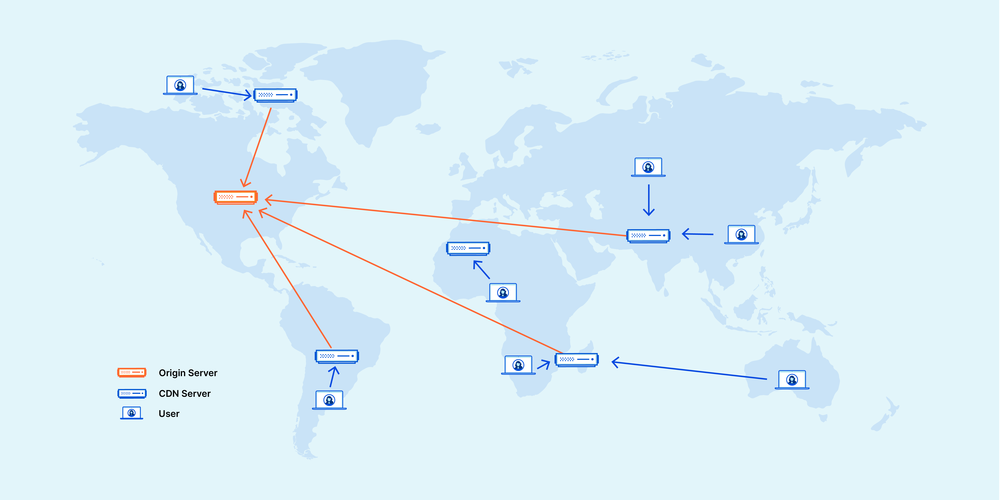


So in this case it's through CDN, which stands for Content Delivery Network. And what these are is little hubs all across the entire world and it knows where your users are located. So when they load up your website and try to access this particular CSS file that contains all of the bootstrap code, then it can find the closest location with the shortest distance to the server that has that content. And that just means that even though this has to be downloaded from somewhere, it can be delivered to your user and rendered very, very quickly. And from our point of view as developers, all we need to do is simply include this link into the head section of our HTML. And if we want any of the functionality like dropdown menus or clickable buttons, then we want to include the bootstrap script just before the end of the body section.
Bootstrap Layout
12 Column System

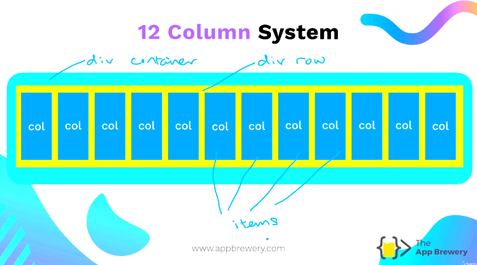
So now that we've had a little bit of a taste of what Bootstrap can do, let's dive deep into one of
the most powerful features of Bootstrap, which is the 12 column layout system.
The 12 column system is made of three components.
Firstly, we need a div that has a class of container and this is going to be the starting point.
Next inside that container we need another div which is going to be of class row and inside the row
is where we will have our items and they will be laid out using the column system.
So what does this look like in code?
<div class="container">
<div class="row">
<div class="col">Hello</div>
</div>
</div>Well, it's pretty simple.
We have a container that contains a single row and then within the row we can have as many items as
we like.
And they're laid out using the column class.
Pretty simple so far.

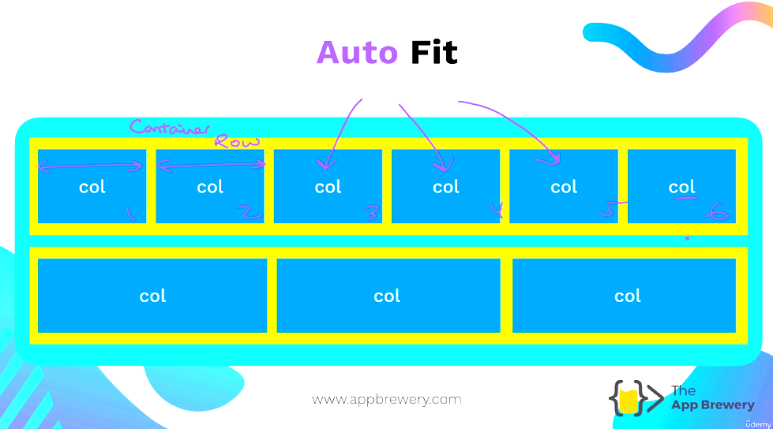
And you're probably thinking, well, there's nothing very groundbreaking here.
Now, the interesting thing starts happening when you have multiple columns laid out inside these rows,
because automatically Bootstrap will try to give every column inside the row equal spacing and space
them across the entire width of the container.
So if you had a container which included a row that had one, two, three, four, five, six divs in
there, each with the class set as call short for column, then it will divide up the entire width by
six.
And if you had three of them then it would give each of them a third of the space.

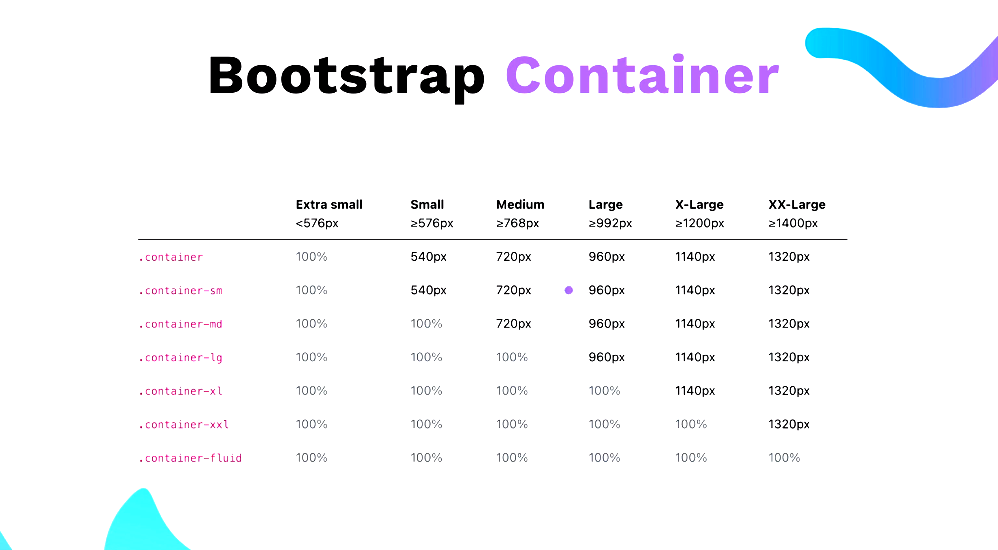
Also bootstrap container is responsive.
The layout system gets more interesting when we start using sized columns.

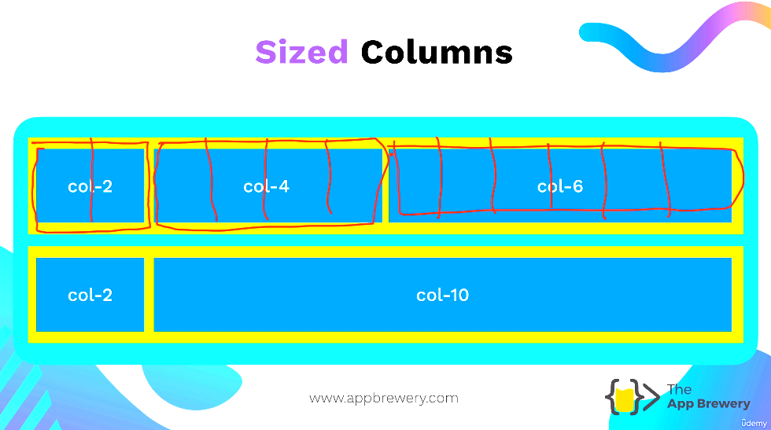
Instead of just writing Col as the class, we can actually set the class as for example, Col dash two
or cold dash four.
And what this is saying is if we think of each of our rows as having 12 columns and we split them all
up into the 12 equal size columns like this.
So if you count this is actually a total of 12.
Then when we create a div we can specify well how many of these columns do we want to occupy?
In this case this div wants two of those columns and then this one wants four of them and then the final
one wants six.
Based on the classes that you choose, Bootstrap will know how much space to allocate each div on a
percentage basis.
So you could view the COL six as a 50% and the col two as one sixth of the entire width and so on and
so forth.
So you can use all of the numbers col one all the way up to col 12 and you can split up the proportion
of your screen and the content inside.
So maybe you would have a navigation section on the left that you only want to take up two out of 12
width and then the main content here maybe could take up ten out of 12 of the width and so on and so
forth.
And this is a really, really easy and intuitive way of sizing your content using bootstrap, and this
is what the code would look like.

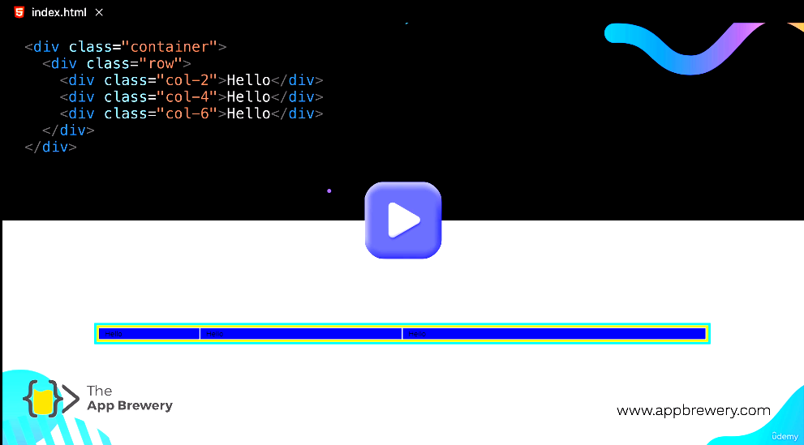
So we have three divs and we're giving this one two out of 12, four out of 12, six out of 12.
And this is the layout that we end up with.
And we didn't have to write any CSS.
All we had to do was add in the pre-built layout classes.
Again, it's really important to know that Bootstrap has predefined breakpoints and these dimensions

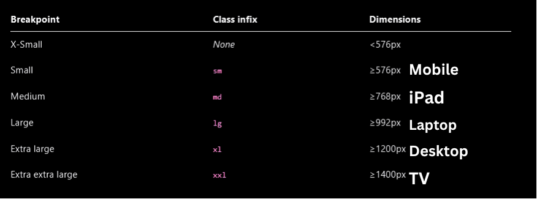
are defined based on common screen sizes.
And even though these numbers are constantly changing, generally I would say that small is for mobile
devices, medium is for tablets and iPads.
A large is for laptop, extra large is for desktop, and extra extra large is for anything crazy like
maybe a TV or something.
An extra small is for devices that are maybe longer than they are wide.
So maybe foldable phones and even really narrow phone screens.
.png){kind=link}
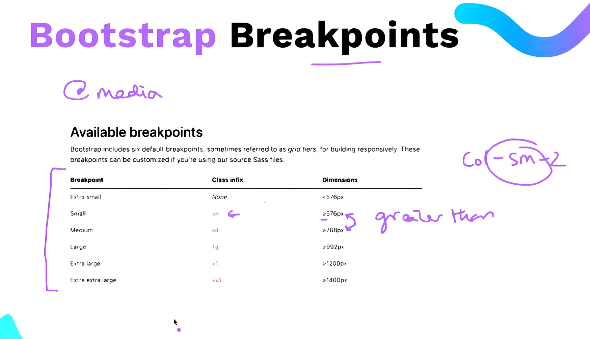
Now, one thing I want to draw your attention to is the directionality of the signs here.
All of these breakpoints, which will often use, for example, coal dash, SM dash two.
This section refers to the screens which are greater than this dimension.
So that means the small breakpoint is between here and here and covers the range between 576 and 768,
and each of them always go up.
So this is important point to keep in mind when you're dealing with the bootstrap breakpoints.
Now, one of the great things about bootstrap breakpoints is we don't really need the media queries
as much because this covers pretty much a lot of the different device dimensions and we don't have to
manually write all the pixel sizes and add media queries into our CSS.
We can target the different sizes and make our website responsive by using the pre-built breakpoints.
PRACTICE:-
So in order for you to practice, I've created a website at github.io forward slash bootstrap dash layout,
Wire Framing
- First make a Mock-up (replica) of the web-site before making it.
- Take some inspiration from other’s website.
- ui-patterns.com to see different types of website.
- Physically making the sketch of the website’s.
- Dribbble.com for different websites to take inspiration from.
- You can also download the templates from https://sneakpeekit.com and print it to make the sketch.
- If you want to be more advanced, you can visit the https://balsamiq.cloud/ website to make the framework of the website.

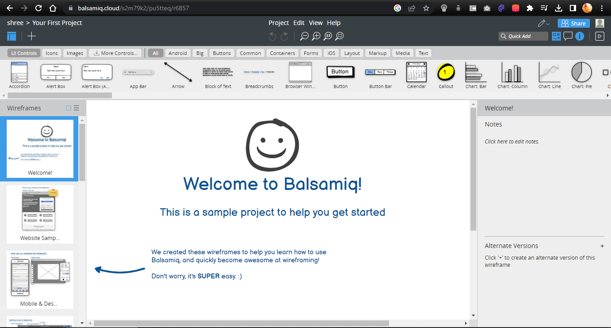
Bootstrap Components
Learn to use the pre-built and pre-styled Components…
BUTTONS

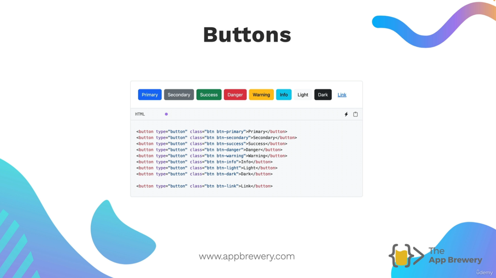
Let's start with one of the most commonly used components, which is the bootstrap button.
And this is a really good place to start because you also see the default bootstrap styling and the
color scheme in most of the components that you'll get access to through bootstrap.
If you want to give it a particular color.
It's really easy to access all of these default colors by simply using their name in most cases in a
bootstrap design website, the primary button, the go to, you know, the buy or the contact us or
download whatever will be this blue color and you can access all of the other colors through each of
their bootstrap names and they give you a little bit of a hint as to what they're used for.
So success is usually like an okay button danger.
Maybe if you click this button, something really bad happens or warning, etcetera, and you get access
to this button and this button styling simply by creating a button HTML element, giving it the class
BTN for a bootstrap button, and then adding the class for the color scheme from this list that you
want to choose.
Let's try this out.
Example:-

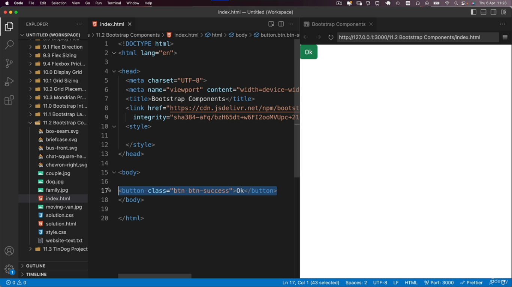
CARD
The next component I want to talk about is a really useful one, which is the card which you already
saw in the previous lessons exercise.

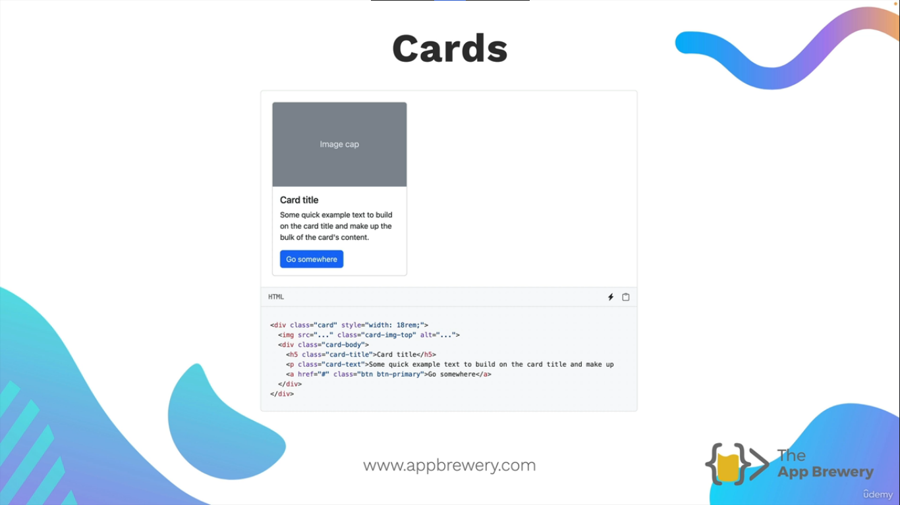
And as always, all we need to do is go to that particular component's page and then we can simply copy

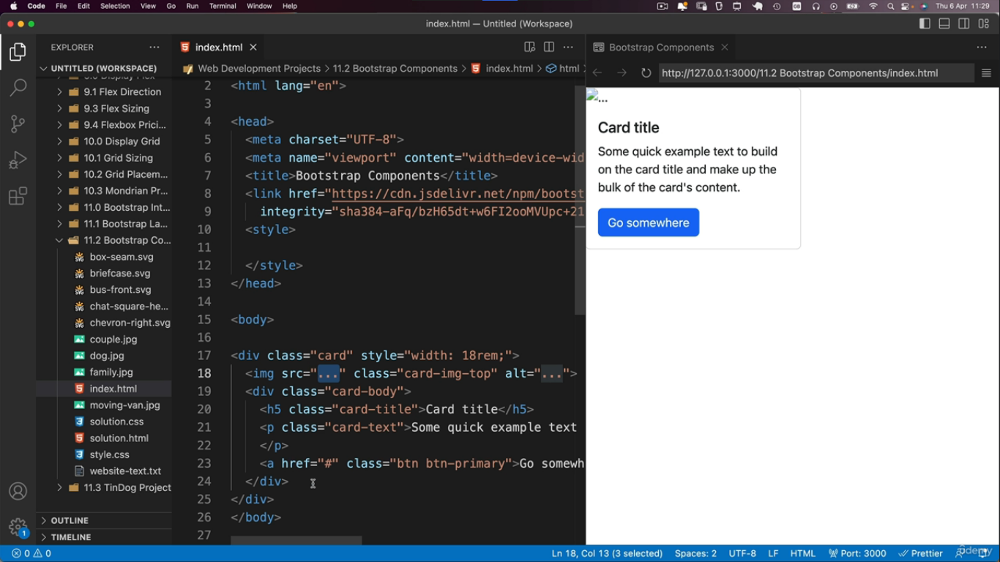
the code, paste it into our website and replace certain parts of the code, such as the image source
or the alt text.
NAV BAR

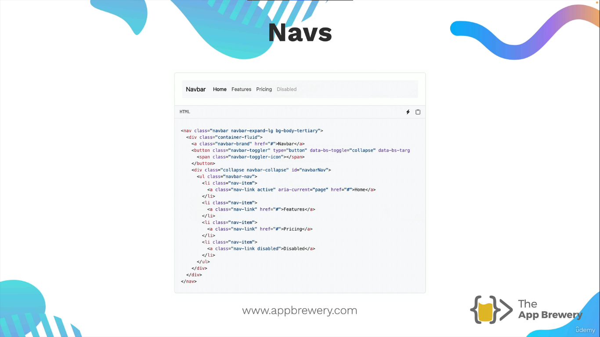
Now, one component that you're probably going to be using whenever you're building a website is a nav
bar, and the bootstrap nav bars are some of the best designed nav bars I've seen.
And it also is super easy to include simply using their example snippet codes.
If you head over to the nav bar, you can read on how it works And also what's some of the examples
they have are for example, this one with a search bar with some dropdowns, and this one which describes
how you can have the brand at the top left or if you want an image, image and text brand and you can
scroll through this to find the kind of nav bar you want to create and to use the example code.
Now another area for the nav bars is if you head over to examples and you go to the header section,
you can see some even more Fancily laid out nav bars here.

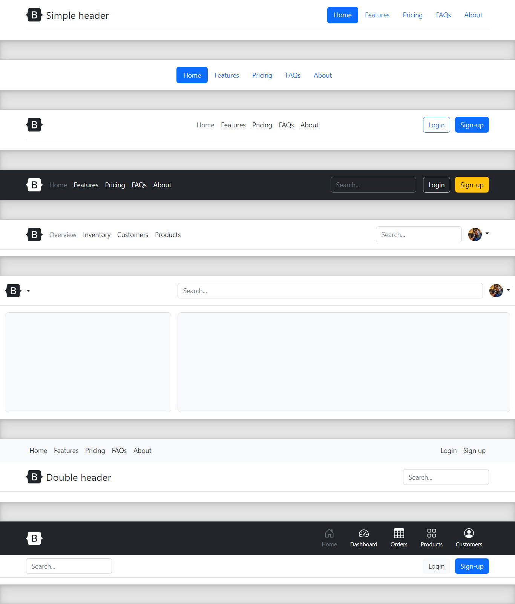
Just copy it and paste it…
⚒Do it YOURSELF…
Now there are hole lot of Components in bootstrap like navbar, carousel, buttons, dropdowns, card, alerts etc. Soo we have covered some of them and for rest of the properties you can go to the bootstrap documentation and learn about them:-
You can also see the udemy’s 66. Bootstrap Components video:-